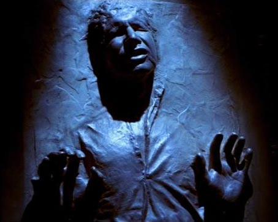

The return of all Star Wars characters from the original trilogy is meant to be surprising, although they are featured on the movie's poster. Rey and Finn escape by stealing an uncomissioned ship, which later is found to be the Millenium Falcon. Han Solo, frozen in Episode 6, is found alongside Chewbacca when they capture the Falcon mid-flight.

The new Darth Vader re-incarnate, Kylo Ren, turns out to be the son of Han Solo and Leia and, coincidentally, the grandson of Darth Vader himself. In a moment that seems to be promising where Han Solor is attempting to talk Kylo Ren out of his dark ways, he is killed by his son. Knowing this before walking into the theater may take away the initial impact of an intense scene, but it can also give you an idea of what to expect.
The movie is based around the legend of Luke Skywalker and the quest of both sides to complete a map that leads to his location. When the map is found by the Resistance to be incomplete, the missing piece is found inside R2D2. The movie concludes with Rey approaching Luke Skywalker on a hilltop, presenting the audience with the promise of Episode 8.
Back to homepage.